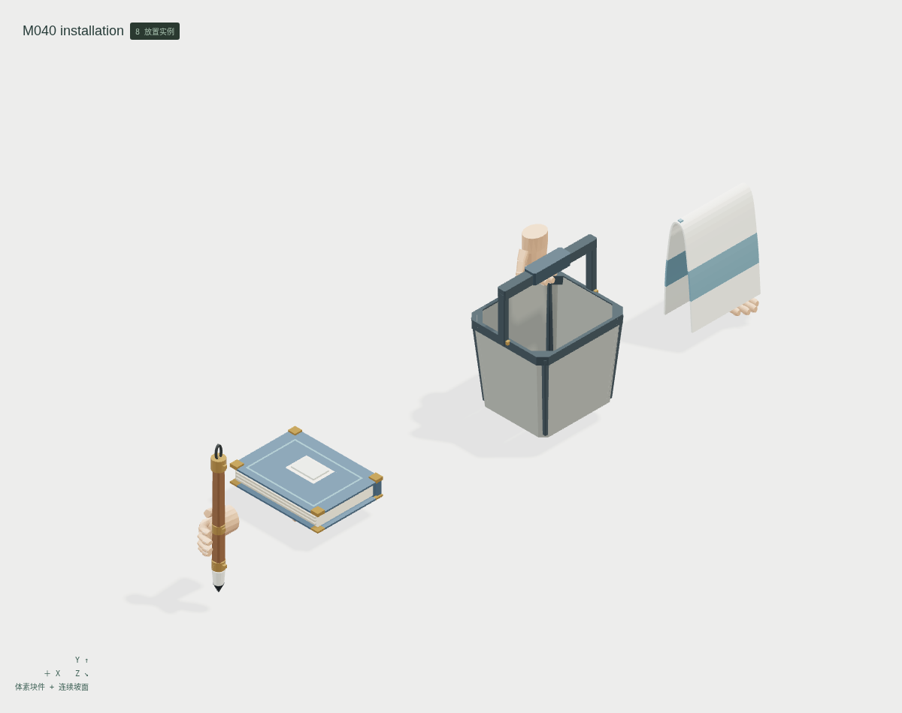
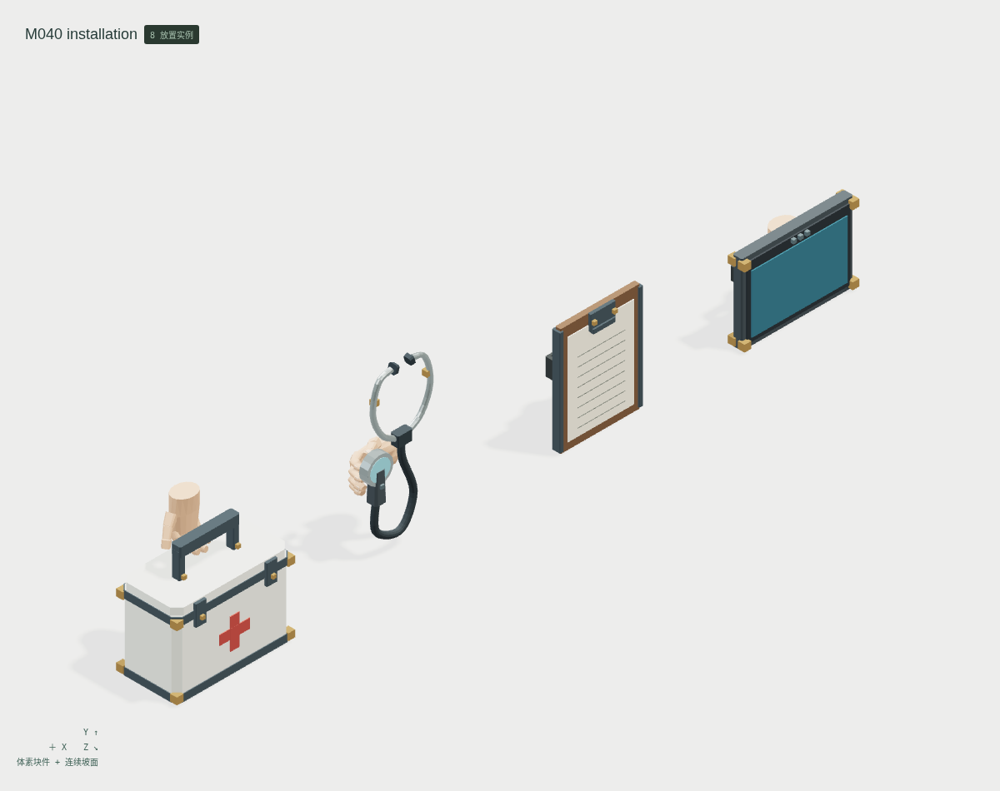
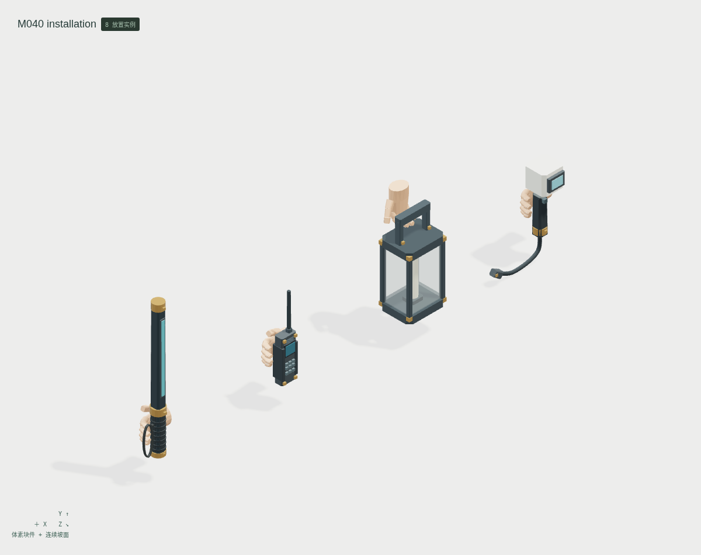

<!doctype html><meta charset="utf-8"><style>*{box-sizing:border-box}body{margin:0;background:#e2e4df;color:#263c34;font:20px system-ui}header,footer{padding:26px 34px}h1{margin:0 0 12px;font-size:32px}main{display:grid;grid-template-columns:1fr}figure{margin:0;border:1px solid #bec5bd;background:#eceeea}img{display:block;width:100%}figcaption{padding:14px 24px}</style><header><h1>云山 M040 · 角色日用、诊疗与执勤持物</h1>12 个参考条目 · 11 个新增母版 + 1 个共用引用 · 24 种静态形态<br>最小细件体素；折布、弯管、器壁与斜面使用连续网格</header><main><figure><figcaption>抹布 / 提桶 / 共用书册 / 粗杆毛笔</figcaption></figure><figure><figcaption>手持终端 / 记录板 / 诊察器 / 急救箱</figcaption></figure><figure><figcaption>探头 / 提灯 / 通信器 / 勤务棍</figcaption></figure></main><footer>原 CHAR070 与 LIFE106 保留，不重复计数。八种有限握姿、两种背带内承托、两种掌根承托；无原骨架、IK、布料/胶管/水模拟或设备控制器。显示与灯芯未绑定、零发光。固定折布、刚性指节和旧书造型仍待美术审阅。技术候选，人工美术验收 0。</footer>